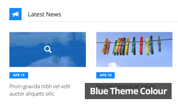
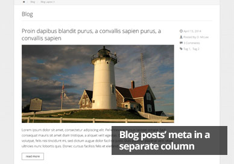

About TWILLI Sky Theme
TWILLI Sky is a fully responsive multipurpose HTML theme by TWILLI Themes. It offers a variety of layouts and components which can be reused anywhere within the theme. The pages are built with Bootstrap, and all of the Bootstrap components/features can be used.
TWILLI Sky includes more than 20 pages/templates and features 6 theme colour styling which can be applied easily to any page.
All pages' sections are well structured and organised, making them easier to use and edit. However, basic knowledge of HTML, CSS and the Bootstrap framework is required. More information about the Bootstrap framework can be found on getboostrap.com
» go to top
What's Included
Included with this theme (in the folder /theme-files/) are the following:
Theme assets and resources
- bootstrap/ - includes the bootstrap-3.1.1 dist files. It is NOT recommended to edit these files.
- css/ - includes the TWILLI Sky theme CSS files and the font files.
- fonts/ - The font family files used throughout the theme (Open Sans).
- less-includes/ - The LESS files which are used to generate the 6 colours' rules.
- colour-list.less - If you want to edit/add a colour, first edit this file. Then compile the style-colours-less.less and style-mixedcolours-less.less and replace the respective CSS files in /css/
- base.css * - The base CSS rules which override the default Bootstrap styling
- loader.css * - The styling for the page loader.
- style-colours.css * - The 6 colours' styling. Compiled from style-colours-less.less in /css/less-includes/. A minified version is available - style-colours.min.css
- style-mixedcolours.css * - The multicolour styling for the main menu. Compiled from style-mixedcolours-less.less in /css/less-includes/. A minified version is available - style-mixedcolours.min.css
- style-theme - The main styling rules for TWILLI Sky theme.
- styles.css - It is RECOMMENDED to include all your extra/additional CSS rules in this file. * Not recommended to be edited.
- images/ - all the images used in the theme are found in this folder
- design/ - DO NOT DELETE these images as they are needed for the theme styling.
- temp/ - these are the theme images used as "dummy" content to populate the website. It is recommended to store your new images in a separate folder(s).
- js/ - includes the JS scripts used in the TWILLI Sky theme.
- functions.js - this includes all the javascript custom functions used in the website. This is the uncomressed version which you can use for editing / further development. A minified version is available - functions.min.js
- initialise-functions.js - all the functions in functions.js above (plus other JS functionality) are initialised in this file (on document/window load, and on page resize). The other included JS files are required by the theme, and must not be edited.
- plugins/ - includes the plugins (JS/CSS) used by the theme. It is NOT recommended to edit these files.
Theme Pages/Templates (HTML files)
- 404.html - the 404 (Page Not Found) template.
- about.html - a generic template (text/content), with a sidebar.
- about-fullwidth.html - a generic template (text/content) spanning across the full width of the container.
- about-gallery.html - includes an image gallery grid (with thumbnails of same dimensions).
- about-gallery-masonry.html - includes an image gallery grid in a masonry format (with thumbnails of different sizes).
- activities.html - template includes a grid of thumbnail/text blocks.
- activities-textmask.html - template includes a grid of thumbnail blocks, each with a text mask visible on mouseover.
- blog.html - main blog post listings template, with a sidebar.
- blog-2.html - main blog post listings alternative template, in a masonry format.
- blog-3.html - main blog post listings alternative template, each post spanning across the full width of the container.
- blog-4.html - main blog post listings alternative template, with each post's meta details in a separate column.
- blog-item.html - a single blog post template, with a sidebar, including a comments section.
- blog-item-2.html - a single blog post alternative template, full width, including a comments section.
- contact.html - template for a contact page.
- contact-2.html - an alternative template for a contact page.
- features-slider.html - template includes a full-width content/text slider.
- generic-page-w-submenu.html - a generic template (text/content) which includes a submenu in a sidebar. This is ideal for any subpage.
- index.html - the home page template.
- index-2.html - an alternative home page template.
- news.html - template includes a list of items each containing a thumbnail, text and date. Ideal for a news listings page.
- news-date.html - template includes a list of items each containing a large-text date, and text. Ideal for a news listings page.
- ondemand.html - a media on-demand list simple template.
- services.html - template includes a list of items each containing a thumbnail, text, and button. Ideal for a services listings page.
- services-grid.html - template features a grid of items each containing a feature icon and text. Multiple alternative styles are included.
» go to top
Getting Started
To get started, copy all the files and folders found in /theme-files/ into the root directory of your site.
Then, start creating your desired website pages by making use of the provided HTML templates (starting from the index.html as the home page).
You can use section blocks / features from the different templates in any page you want.
Remember that each template page has a common header and footer, and any change to these sections should be replicated in the other template pages.
More information about the different features/sections can be found below in this documentation.
» go to top
Theme Configuration
TWILLI Sky theme pages can be configured easily in order to change general page styling. This mostly involves changing classes to the <body> tag.
Sections Block
Each page layout can either have isolated section blocks or a single sections block.

Isolated Section Blocks
This layout style is characterised by separate blocks/containers for each section inside the page. All blocks are slightly apart from each other.
To apply this layout style: ADD the isolated-sections class to the <body> tag of each page.
Single Sections Block
This layout style includes all the website sections in one single block/container.
To apply this layout style: REMOVE the isolated-sections class from the <body> tag of each page.
Page Background
Each page can have a light or dark pattern background. Otherwise, an image can be used as background instead.
Light/Dark Background
To apply a light or dark background: ADD the background-light OR the background-dark class to the <body> tag of each page.
Page Background Image
To apply an image as the page background:
- ADD the w_bg_image class to the <body> tag of each page.
- ADD the following CSS rule in /css/styles.css:
body.w_bg_image { background-image: url(/path/to/background/image.jpg); }
Page Colour Theme
TWILLI Sky includes 6 colour themes which can be applied to each page:
- red
- orange
- yellow
- green
- blue
- pink
The selected colour theme would reflect various items within each page, such as the link colour, icon background colour, hover effects, border colour, and more.

To apply one of the the colour themes: ADD the twlsky-red, OR twlsky-orange, OR twlsky-yellow, [...] class to the <body> tag of each page.
If you want to edit/add a colour from/to the list above, first edit the LESS file: /css/less-includes/colour-list.less. Then compile the style-colours-less.less and style-mixedcolours-less.less in the same folder and replace the respective CSS files in /css/.
Only do this if you have basic knowledge of LESS. A LESS compiler is required.
Multicolour Main Menu
The main menu items each have a bottom-border hover effect. Same thing applies to the active menu item. In addition, the dropdown menu items have a background-colour hover effect.
If the Multicolour main menu feature is enabled, each menu item's colour is different, and based on the 6 colour themes mentioned above.
If not enabled, each menu item's colour is the one selected as the page colour theme (see the section "Page Colour Theme" above).
To enable the Multicolour Main Menu: ADD the twlsky-mixedcolours class to the <body> tag of each page.
Page Pre-Loader
When the page content is loading, a thin coloured progress bar is shown at the very top of the page. Once all content is loaded, the progress bar disappears.
To enable the Page Pre-Loader: ADD the loader-bar class to the <body> tag of each page.
» go to top
HTML Structure
The pages of TWILLI Sky are structured as follows:
Website Sections/Blocks
It is important to understand how the website sections/blocks are structured:
- Horizontal Section Container - a single sections block, which spans across the whole width of the content container, and includes a number of section containers
- Section Container - a single section which represents a website component/feature. These can be moved/reused anywhere inside any Horizontal Section Container.
The HTML Structure of a Horizontal Section Container involves the following:
- <div class="container-fluid horizontal-section-container clearfix"> - the outer container of the Horizontal Section
- <div class="row">
- <div class="col-XX-X"> - this represents a column which contains one or more Section Container. (For more information refer to the "Grid System" section in the Bootstrap documentation)
- <div class="section-container [extra classes] clearfix" id="[unique id for the Section]"> - the outer container of the Section Container. Any section can be moved/replicated/deleted through this container. All the content for each section is found in this container.
- <div class="col-XX-X"> - this represents a column which contains one or more Section Container. (For more information refer to the "Grid System" section in the Bootstrap documentation)
- <div class="row">
» go to top
Main Menu
The main menu of TWILLI Sky is represented by <ul id="main-menu">. Each menu item can have unlimited number of sub-menus, which appear on mouseover of top level menu items.
Each menu item <li> should have the menu-item class.
The class representing an active menu item is current-menu-item. If the active menu item is found inside a sub-menu, the parent top-level menu item should be assigned the current-menu-ancestor class.
The HTML structure of the main menu can be summarised as follows:
» go to top
Top Banner Carousel
The theme includes Owl Carousel, a responsive slider/carousel which allows you to create elegant image/content sliders.
These can be found in the home page templates (index.html and index-2.html).
The content for the carousel is placed inside a separate Horizontal Section Container (see the section "HTML Structure" above) as below:
Slide Content
Each slide inside this carousel MUST include an image, and may contain text captions. There are a number of layout options for each slide:
- Without text caption
- Text caption slightly indented from the image borders, placed at top/bottom left/right corner of the slide.
- Text caption at the edge of image borders, placed at top/bottom of the slide.
- Full width text caption at the bottom of the slide.
The HTML markup for each slide should follow this structure:
Slide without text caption
- Remove/Comment-out the <div class="text"> container.
Text caption slightly indented from the image borders
- ADD the top/bottom classes AND the left/right classes to the <div class="text"> container to determine the position of the text caption.
Text caption at the edge of image borders
- First ADD the top/bottom classes AND the left/right classes to the <div class="text"> container to determine the position of the text caption.
- Then ADD the no-side-padding classe to the same <div class="text"> container.
Full width text caption at the bottom of the slide
- Replace the HTML content of the <div class="text"> container with the following:
<a href="[link]" class="text bottom-full-width"> <h2>[Large Caption Text]</h2> <p>[Small Caption Text]</p> </a>
Initialising Carousel (JS functionality)
The carousel is initialised in the /js/initialise-functions.js under the section "Initialise Top Banner Carousel". More information about the configuration settings for the carousel can be found on the Owl Carousel website: www.owlgraphic.com/owlcarousel
Slider Navigation Arrows
The slider navigation arrows are found inside the <section id="top-banner"> container.
To enable the arrows, make sure these exist and are not commented.
To disable the arrows, comment them out or remove them.
» go to top
Image Gallery
TWILLI Sky includes two templates for an image gallery.
- about-gallery.html - a gallery grid with thumbnail images of same dimensions.
- about-gallery-masonry.html - A gallery grid in a masonry format (with thumbnail images of different sizes).
The HTML markup of the gallery is as follows:
For the gallery grid in a masonry format, add the gallery-masonry class to the <div class="gallery-grid"> container.
Each gallery image item links to a larger version of the image via Lightbox.
» go to top
Image Hover Effects / Masks
TWILLI Sky comes with a variety of image hover/mouseover effects.
- Fade
- Slide from left/right/top/bottom
- Rotate from left/right
- Box
- Zoom
- Scale Images (additional to the effects above)
- Bottom Caption
To add a hover/mask effect to an image, the following HTML structure should be used:
Fade Effect
To apply this effect to an image: ADD the fade class to the <a class="img-mask-effect"> container of the image.
Slide Effect (from left/right/top/bottom)
To apply this effect to an image: ADD the slidefromleft OR slidefromright, etc, class to the <a class="img-mask-effect"> container of the image.
Rotate Effect (from left/right)
To apply this effect to an image: ADD the rotatefromleft OR rotatefromright class to the <a class="img-mask-effect"> container of the image.
Box Effect
To apply this effect to an image: ADD the box class to the <a class="img-mask-effect"> container of the image.
Zoom Effect
To apply this effect to an image: ADD the zoom class to the <a class="img-mask-effect"> container of the image.
Scale Image (additional to the other effects)
To apply this effect to an image: ADD the scaleimage class to the <a class="img-mask-effect"> container of the image.
Bottom Caption
- To apply this effect to an image: ADD the bottom-caption class to the <a class="img-mask-effect"> container of the image.
- Then, replace the container <i class="mask"> with:
<span class="text">Caption</span>
» go to top
Blog
The theme offers four different blog post listing templates:
- blog.html - with a sidebar.
- blog-2.html - masonry format.
- blog-3.html - posts spanning across the full width of the container.
- blog-4.html - post's meta details in a separate column.
There are also two single blog post templates:
- blog-item.html - with a sidebar, including a comments section.
- blog-item-2.html - full width, including a comments section.

All blog posts/articles are listed in the <div class="blog-articles-container">. Each blog post is represented with a <article class="blog-article"> container.
Each blog post in the TWILLI Sky templates include the following:
- Title
- Post Meta
- Post Author
- Post Date
- Post Tags
- Thumbnail Image
- Excerpt Text
- Post Full Text *
- Comments Section * * available in the single blog post templates.
» go to top
Contact Page Form
TWILLI Sky comes with two alternative layouts for a contact page, contact.html and contact-2.html. Each of these include a functioning PHP Ajax Contact Form.
When installing this theme it is important to change the email address at the top of the /php/mail.php file to the email address the you want this form to send to.
The form includes the following fields:
- Full Name - required
- Email Address - required
- Contact Number
- Message - required
Each form field is validated on change, and on submitting the form by the validate_fields() function in /js/functions.js.
Each field has a data-validation-type attribute, and this determines what type of input is expected in this field. This attribute value can be either: string, email, or phone.
The form also includes a CAPTCHA, intended to filter spam. The captcha only works if a PHP server is set (locally you need to use a tool like XAMPP, WAMP, or MAMP).
» go to top
Pagination
There are two types of pagination styles available with this theme:
- Numbered Pagination
- Prev/Next Pagination
The HTML markup for the numbered pagination is as follows:
Similarly, the HTML markup for the prev/next navigation is:
It is recommended that this code goes right after the end of the list container
Example: after the </div> of the blog-articles-container in the Blog pages.
To mark a pagination item as active, add the active class to the page <li> item.
To mark a pagination item as disabled, add the disabled class to the page <li> item.
To center align the pagination items, add the center class to the <div class="pagiantion-container">.
If you prefer the Prev/Next pagination items on both sides of the page (floating left and right):
- ADD the float-left class to the "Previous" <li> tag.
- And ADD the float-right class to the "Next" <li> tag, or vice-versa.
» go to top
Scalable Font Icons
TWILLI Sky makes use of two scalable font icon sets:
- Glyphicons
- Font Awesome
Glyphicons
To add a Glyphicons icon, use the following code:
<span class="glyphicon glyphicon-[icon id]"></span>, OR:
<i class="glyphicon glyphicon-[icon id]"></i>
The full list of the available icons and their IDs can be found on: getbootstrap.com/components.
Font Awesome
To add a Font Awesome icon, use the following code:
<span class="fa fa-[icon id]"></span>, OR:
<i class="fa fa-[icon id]"></i>
The full list of the available icons and their IDs can be found on: fortawesome.github.io/Font-Awesome/icons/.
Remember that these icons should be treated as "text" rather than an "image icon". This means that if, for example you want to change their colour, you should use the CSS "color" rule, as you do to any text. If you want to increase their size, you have to alter their "font-size" value... and so on.
» go to top
Sources and Credits
Resources and Plugins:
- jQuery 1.11.1 - http://jquery.com/
- Bootstrap 3.3.1 - http://getbootstrap.com/
- jQuery Easing 1.3 - http://gsgd.co.uk/sandbox/jquery/easing/
- Owl Carousel 1.3.2 - http://www.owlgraphic.com/owlcarousel/
- Detect Mobile Browsers - http://detectmobilebrowser.com/
- Lightbox 2.7.1 - http://lokeshdhakar.com/projects/lightbox2/
- Masonry 3.2.2 - http://masonry.desandro.com
- Pace 0.5.1 - http://github.hubspot.com/pace/docs/welcome/
Fonts:
- Google Fonts - https://www.google.com/fonts
- Font Squirrel - http://www.fontsquirrel.com/
Images and Icons:
- Morguefile - http://www.morguefile.com/
- Glyphicons - http://getbootstrap.com/components/
- Font Awesome 4.1.0 - http://fortawesome.github.io/Font-Awesome/
» go to top